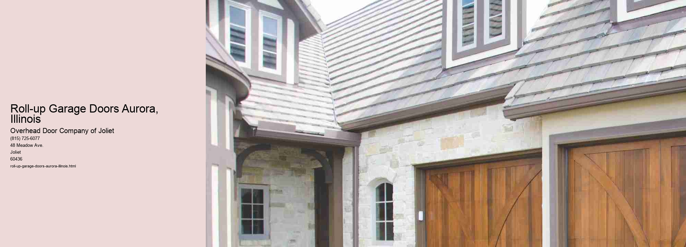

Roll-up garage doors have become an essential feature for many homeowners and businesses in Aurora, Illinois. Known for their convenience, durability, and space-saving design, these doors offer a practical solution for anyone looking to enhance the functionality and aesthetic of their garage or storage facility. As Aurora continues to grow and evolve, the demand for efficient and reliable garage door solutions, such as roll-up doors, has risen significantly.
Aurora, situated in the heart of Illinois, is a city that experiences a full range of weather conditions, from hot, humid summers to cold, snowy winters. Such diverse climate demands robust and reliable infrastructure, and roll-up garage doors fit the bill perfectly. Constructed from high-quality materials like galvanized steel or aluminum, these doors are designed to withstand the elements, offering excellent resistance to rust, warping, and other weather-induced damages. This makes them an ideal choice for Auroras ever-changing climate.
One of the primary benefits of roll-up garage doors is their space-saving design. Unlike traditional swing-out or swing-up doors, roll-up doors coil up neatly above the garage opening, maximizing the available space. This feature is particularly advantageous for homes and businesses in Aurora where garage space might be limited. Homeowners can utilize the extra space for storage or enjoy the convenience of a more spacious driveway, while businesses can accommodate larger inventory or equipment without worrying about door clearance.
Security is another crucial factor that makes roll-up garage doors a popular choice in Aurora. The robust construction and design provide enhanced security for properties, deterring potential intruders. Many roll-up doors also come with advanced locking mechanisms and can be integrated with smart technology for added peace of mind. For businesses, especially those storing valuable equipment or inventory, the added security is invaluable.
Energy efficiency is increasingly important for both homeowners and businesses in Aurora. Roll-up garage doors often come with insulation options that help maintain a stable internal temperature, reducing heating and cooling costs.
Aesthetically, roll-up garage doors offer a sleek and modern look that can enhance the curb appeal of any property.
Furthermore, the ease of operation and low maintenance requirements of roll-up garage doors add to their appeal. With minimal moving parts, these doors are less prone to mechanical issues and require less frequent repairs. For busy homeowners and business owners in Aurora, this means more time focusing on daily activities and less time worrying about garage door maintenance.
In conclusion, roll-up garage doors are an ideal solution for the diverse needs of Aurora, Illinois. Their durability, space-saving design, security features, energy efficiency, aesthetic appeal, and low maintenance make them a valuable addition to any home or business. As Aurora continues to thrive, roll-up garage doors will undoubtedly remain a popular choice for those seeking a reliable and stylish garage door solution.
Sectional Garage Doors Aurora, Illinois